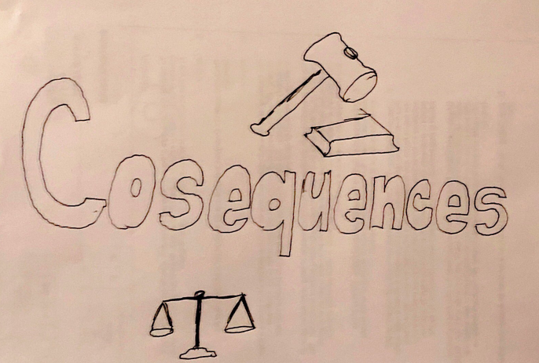

The Application of Brain-Computer Interfaces for Medicine and Communication
Consequences
The primary consequences for BCI are ethical. The first category that Trimper et al. (2014) states the “neural privacy” of an individual could be compromised. There is no private thinking with one’s cerebral information since one’s brain impulses are continuously monitored by a computer (Trimper et al., 2014). Potiental hacking could occur on one's brain. In addition, the brain-to-brain interface has currently no way of rejecting information it receives, meaning that it could be a potential outlet for mind control (Trimper et al., 2014).
